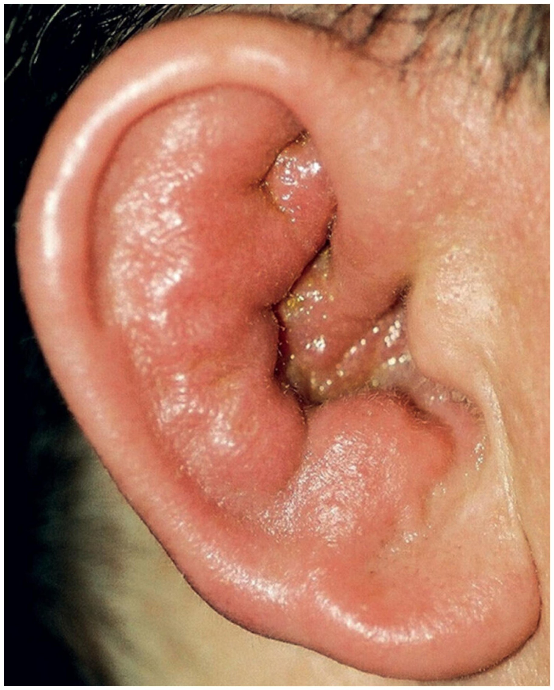

Сверка с PDF рубрикатора выполняется…
Наружный отит у детей
Клинические рекомендации от 18.12.2024 · дети
Основные положения
- Наружный отит: воспаление ушной раковины, наружного слухового прохода и эпидермального слоя барабанной перепонки. Формы по течению:
- острая: до 6 недель;
- хроническая: симптомы более 3 месяцев или более 4 эпизодов в год.
- Критерии диагноза:Обязательный критерий
- признаки воспаления слухового прохода: болезненный козелок и (или) ушная раковина, или диффузный отёк, или гиперемия слухового прохода.
- оторея;
- регионарная аденопатия;
- эритема барабанной перепонки или целлюлит ушной раковины и прилегающей кожи;
- боль в ухе, иногда с иррадиацией в челюсть;
- зуд или ощущение распирания в ухе.
- Основу лечения составляет местная терапия ушными каплями, активными против синегнойной палочки и золотистого стафилококка. Эффект оценивают через 48–72 часа, курс в среднем 7–10 дней (до 14).
- При неосложнённом наружном отите системные антибактериальные препараты не назначают: они неэффективны.
- Лечение, как правило, амбулаторное. Госпитализации подлежат дети в тяжёлом состоянии; неэффективность лечения, подозрение на прогрессирование и осложнения требуют консультации оториноларинголога и госпитализации.
Клиническая картина и классификация
Определение
Наружный отит (НО): воспаление ушной раковины, наружного слухового прохода (НСП) и эпидермального слоя барабанной перепонки.
Классификация
- острая форма: до 6 недель;
- хроническая форма: симптомы сохраняются более 3 месяцев или более 4 эпизодов наружного отита в год.
- диффузный наружный отит;
- ограниченный наружный отит: фурункул, абсцесс;
- экзема и дерматит;
- рожистое воспаление;
- перихондрит;
- герпетическое поражение;
- грибковый наружный отит;
- злокачественный наружный отит.
Злокачественный наружный отит (ЗНО): наиболее тяжёлая форма, для которой характерно быстро прогрессирующее течение с распространением процесса за пределы ушной раковины, слухового прохода и наружного уха.
Этиология
Воспалению предшествует нарушение целостности кожи.
Причины и предрасполагающие факторы- травматические повреждения;
- длительное пребывание во влажной среде, попадание воды в уши;
- изменения кожи при нарушении обмена веществ, сахарном диабете, дерматитах, экземе;
- узкие наружные слуховые проходы, экзостозы;
- ношение слухового аппарата, наушников;
- недостаточное образование или изменение состава ушной серы;
- нарушение местного и общего иммунного статуса;
- лучевое воздействие.
Ведущие возбудители у детей: синегнойная палочка (Pseudomonas aeruginosa) и золотистый стафилококк (Staphylococcus aureus); также P. vulgaris и E. coli.
- воспалительные заболевания наружного уха имеют бактериальную природу в 60–98%;
- P. aeruginosa выделяют в 20–60%, S. aureus в 10–70%;
- анаэробные штаммы встречаются в 4–25%;
- смешанная флора — в трети случаев.
Грибковый наружный отит у детей не редкость: в России более 20% поражений наружного уха. Основные возбудители: плесневые грибы Aspergillus и Penicillium, дрожжеподобные грибы Candida. Часто выделяют грибково-бактериальные ассоциации с синегнойной палочкой, стрептококками и стафилококками.
- травматическое повреждение кожи;
- нарушение обмена веществ и гормонального баланса;
- иммунодефицит;
- длительное применение системных антибактериальных препаратов и кортикостероидов.
Клиническая картина
Диффузный наружный отит, острая форма.
Отоскопия- отёк и гиперемия кожи НСП, выделения вязкого секрета;
- барабанная перепонка может быть не видна из-за отёка стенок слухового прохода в хрящевом и костном отделах;
- детрит в НСП.
- болезненность в области НСП, усиливается при оттягивании ушной раковины или надавливании на козелок;
- возможна лихорадка до фебрильных цифр;
- болезненность и ограничение движений в височно-нижнечелюстном суставе при открывании рта;
- увеличение и болезненность заушных лимфатических узлов («псевдомастоидит»).
Хроническая фаза: утолщение кожи из-за инфильтрации или фиброза, мирингит. Кондуктивное снижение слуха при значительном сужении или обтурации слухового прохода отделяемым.
Фурункул слухового прохода (ограниченный наружный отит).
Отоскопия- сужение просвета очерченным конусовидным или округлым возвышением с локальной гиперемией;
- стадия инфильтрации (1–3-и сутки): локальное уплотнение кожи;
- стадия абсцедирования: просвечивающая гнойная головка;
- после самопроизвольного вскрытия: кратерообразное углубление с гноем.
- боль в ухе, усиливается при оттягивании раковины или надавливании на козелок;
- иррадиация в зубы, глаз, шею, околоушную область, глотку;
- инфильтрация может распространяться на мягкие ткани, сосцевидный отросток и веки;
- фурункул задней стенки: возможны кашель и рвота (раздражение ветвей блуждающего нерва);
- фурункул передней или нижней стенки: воспаление околоушной железы;
- увеличенные, плотные, болезненные регионарные лимфатические узлы;
- возможна фебрильная лихорадка;
- кондуктивное снижение слуха при значительном сужении слухового прохода.
Экзема и дерматиты.
Острая экзема- гиперемия и инфильтрация кожи раковины и НСП;
- везикулёзно-пустулёзная сыпь на отёчном основании, мокнутие, серо-жёлтые корки;
- выраженный зуд;
- вторичная инфекция ведёт к ограниченному или диффузному наружному отиту.
- зуд;
- утолщение кожи;
- шелушение, трещины, мокнутие.
Рожистое воспаление.
- выраженная гиперемия и припухлость кожи раковины, включая мочку, с линией демаркации за пределами раковины;
- жжение и резкая болезненность при пальпации;
- интоксикация (озноб, головная боль), лихорадка до 39–40 °C;
- при буллёзной форме пузыри с серозным содержимым.
Перихондрит ушной раковины: мочка уха не вовлечена.
- выраженная боль в раковине с возможной иррадиацией в голову или шею;
- отёк, гиперемия, сглаженность контуров раковины;
- резкая болезненность при пальпации;
- гной между надхрящницей и хрящом, флюктуация;
- интоксикация;
- при позднем обращении расплавление хряща, свищи и рубцовая деформация раковины.
Перихондрит ушной раковины

Герпетическое поражение.
- множественные сгруппированные пузырьки на раковине, в НСП, иногда на барабанной перепонке; после вскрытия корочки;
- резкая боль, покалывание, зуд;
- возможна интоксикация;
- в тяжёлых случаях нейросенсорная тугоухость, нарушение равновесия, парез лицевого и тройничного нервов.
Грибковое поражение: картина зависит от возбудителя.
- грудные и ясельные дети: беспокойство, маятникообразные движения головы, расчёсы кожи раковин;
- старшие дети: жидкие выделения (при кандидозе), корочки, зуд, боль, заложенность и снижение слуха; редко головная боль, лихорадка, чувствительность раковины и заушной области.
| Возбудитель | Картина |
|---|---|
| Candida |
|
| Aspergillus |
|
| Penicillium |
|
| Geotrichum capitatum |
|
Злокачественный (некротизирующий) наружный отит у детей редок, возможен при иммунодефиците, в том числе при лейкозе после трансплантации костного мозга.
- интенсивная боль в ухе, головная боль на стороне поражения;
- системные признаки: интоксикация или лихорадка;
- возможны болезненность височной кости и парез лицевого нерва;
- классический симптом: грануляции в костно-хрящевом соединении дна НСП;
- инфекция распространяется к основанию черепа с остеомиелитом височной кости.
В учебнике: заболевания наружного уха. Анатомия и физиология: наружное и среднее ухо, внутреннее ухо.
Диагностика
Диагноз устанавливается на основании анамнеза и физикального обследования с отоскопией. Другие исследования необходимы для выбора лечения, диагностики осложнений и динамического контроля.
Жалобы
- боль в ухе, может усиливаться при пальпации и жевании;
- зуд в НСП;
- выделения из уха;
- снижение слуха.
- лихорадка, как правило субфебрильная;
- ухудшение самочувствия (инфекционный токсикоз).
Отоскопия
- все пациенты с подозрением на наружный отит.
- болезненность при нажатии на козелок и оттягивании ушной раковины;
- НСП гиперемирован, как правило сужен отёком;
- барабанная перепонка видна частично, возможна умеренная гиперемия;
- при отопневмоскопии подвижность барабанной перепонки, как правило, сохранена.
Микробиологическое исследование отделяемого из уха
- тяжёлое течение: до начала терапии;
- рецидивирующий и хронический наружный отит;
- иммунодефицит: иммунодепрессанты, ВИЧ-инфекция, химио- или лучевая терапия;
- инфекция после операции на ухе;
- нет ответа на начальную терапию.
Посев на аэробы и факультативные анаэробы с определением чувствительности, микроскопия и посев на дрожжевые и мицелиальные грибы.
- до начала антимикробной терапии;
- под зрительным контролем;
- тонким стерильным зондом-тампоном из просвета или со стенок НСП, не касаясь дистальных отделов наружного уха.
При необходимости контроля или без эффекта исследование повторяют.
Анализы крови
Рутинно не проводят: лабораторных исследований, подтверждающих диагноз, нет.
Показания- все госпитализированные, в том числе со злокачественным наружным отитом: развёрнутый общий анализ крови и С-реактивный белок.
Рентгенография или КТ височной кости
- подозрение на злокачественный наружный отит или деструктивный процесс: рентгенография или КТ височных костей, при необходимости с контрастированием.
- деструкция височной кости и основания черепа для наружного отита не характерна, кроме злокачественного.
МРТ височных костей и основания черепа
- подозрение на распространение воспаления на окружающие мягкие ткани: уточнение диагноза, распространённости и тактики.
Наркоз по показаниям.
Консультации специалистов
При поражении наружного уха на фоне системных, в том числе инфекционных, заболеваний показаны консультация профильного специалиста и обследование по соответствующим КР. Консультацию проводит:
- детский онколог;
- инфекционист;
- аллерголог-иммунолог;
- детский эндокринолог;
- невролог;
- дерматовенеролог.
Дифференциальная диагностика
Проводят всем с подозрением на наружный отит, в том числе при оторее.
| Заболевание | Отличия от наружного отита |
|---|---|
| Средний отит |
|
| Мастоидит |
|
| Гнойный паротит |
|
| Отомикоз |
|
Особенно важно дифференцировать злокачественный наружный отит.
Признаки злокачественного наружного отита- грануляции в слуховом проходе;
- микроабсцессы в области наружного уха и основания черепа;
- костная деструкция по лучевым методам;
- нет эффекта консервативной терапии более одной недели.
- сахарный диабет;
- нейропатии черепных нервов;
- истощение.
Отсутствие положительной динамики в течение 1–3 недель свидетельствует в пользу ЗНО. Подтверждение: КТ или МРТ (остеомиелит основания черепа), дополнительно маркеры воспаления: нейтрофильный лейкоцитоз, повышение С-реактивного белка.
Лечение
Неосложнённый наружный отит
Местная терапия
- все пациенты с установленным наружным отитом: ушные препараты (противомикробные, кортикостероиды, их комбинации, анальгетики и анестетики).
Препарат должен действовать на синегнойную палочку и золотистый стафилококк. Эффект оценивают через 48–72 часа, длительность лечения в среднем 7–10 дней (до 14).
Препараты из таблицы предназначены для начальной местной терапии неосложнённого наружного отита: безопасны и эффективны, осложнения практически не возникают.
Местная терапия создаёт оптимальную концентрацию в очаге, почти не всасывается и реже ведёт к отбору устойчивых штаммов.
Препараты для местного лечения у детей таблица 1 в тексте КР
| Препарат | Компоненты | Возрастные ограничения |
|---|---|---|
| Офлоксацин, капли глазные и ушные | антибактериальный: офлоксацин | с 12 лет; с 1 года при тимпаностомической трубке |
| Ципрофлоксацин, капли глазные и ушные | антибактериальный: ципрофлоксацин | с рождения (с 0 лет) |
| Норфлоксацин, капли глазные и ушные | антибактериальный: норфлоксацин | с 1 года |
| Ципрофлоксацин + дексаметазон (Комбинил), капли глазные и ушные | антибактериальный: ципрофлоксацин; противовоспалительный: дексаметазон | с 1 года |
| Бетаметазон + гентамицин, капли глазные и ушные | антибактериальный: гентамицин; противовоспалительный: бетаметазон | с 8 лет |
| Фрамицетин + грамицидин + дексаметазон, капли глазные и ушные | антибактериальный: грамицидин + фрамицетин; противовоспалительный: дексаметазон | с 1 года |
| Дексаметазон + неомицин + полимиксин B, капли ушные | антибактериальный: полимиксин B + неомицин; противовоспалительный: дексаметазон | нет ограничений |
| Лидокаин + неомицин + полимиксин B, капли ушные | антибактериальный: полимиксин B + неомицин; анестезирующий: лидокаин | нет ограничений; детям до 1 года только при крайней необходимости и под контролем врача |
| Рифамицин, капли ушные | антибактериальный: рифамицин | нет ограничений |
| Беклометазон + клотримазол + лидокаин + хлорамфеникол, капли ушные | антибактериальный: хлорамфеникол; противогрибковый: клотримазол; противовоспалительный: беклометазон; анестезирующий: лидокаин | с 6 лет |
| Миконазол, крем 2% ² | противогрибковый: миконазол | нет ограничений |
| Клотримазол, крем 1% ¹ ² | противогрибковый: клотримазол | нет ограничений |
| Натамицин, крем 2% | противогрибковый: натамицин | нет ограничений |
¹ Клотримазол не активен в отношении Aspergillus. ² Курс не менее 10 дней.
Наружный отит как проявление контактного, атопического или себорейного дерматита, псориаза, системной красной волчанки: лечение по соответствующим КР. При себорейном дерматите возможна инфекция грибами Malassezia: нужна местная противогрибковая и (или) противовоспалительная терапия.
Возможны аллергические реакции на местное лечение, в том числе на препараты с неомицином.
Туалет наружного слухового прохода
- все пациенты с наружным отитом: регулярная атравматичная очистка от серы и экссудата, поскольку экссудат снижает эффективность местного лечения.
Туалет обычно проводит оториноларинголог. После исключения дефекта барабанной перепонки слуховой проход можно осторожно промывать дистиллированной водой или 0,9% раствором натрия хлорида. Ватными палочками уши не чистить: микротравмы способствуют инфекции.
Обезболивание
- выраженный болевой синдром.
Системно ибупрофен или парацетамол в возрастных дозах и (или) местное обезболивание. Ибупрофен в суспензии разрешён с 3 месяцев, у парацетамола есть ограничения для детей младшего возраста. Местное обезболивание может замаскировать прогрессирование: такого пациента наблюдают 48 часов.
Устранение предрасполагающих факторов ускоряет разрешение воспаления (см. «Этиология»).
Системная антибактериальная терапия
При неосложнённом наружном отите системная антибактериальная терапия не показана: результаты местного лечения в сочетании с системными антибиотиками и с плацебо не различаются.
- воспаление вышло за пределы НСП: заушный абсцесс, мастоидит;
- острый средний отит, в том числе у детей младшего возраста;
- постлучевой наружный отит;
- злокачественный (некротизирующий) отит;
- неконтролируемый сахарный диабет;
- иммуносупрессия;
- невозможность местной антибактериальной терапии.
Препарат должен действовать на P. aeruginosa и S. aureus.
Грибковый наружный отит
Тщательный туалет НСП является обязательным условием местной противогрибковой терапии; его выполняют аттиковым зондом и ватником с противогрибковым препаратом.
Кандидозный отит: 1% раствор клотримазола или 1% раствор нафтифина- туалет и аппликации на турундах: 2 раза в сутки, экспозиция до 10 минут;
- курс в среднем 4 недели.
- туалет и аппликации на турундах: 2 раза в сутки, экспозиция до 15 минут;
- курс в среднем 4 недели.
Противогрибковые кремы (миконазол, клотримазол, натамицин) и длительность их применения приведены в таблице «Препараты для местного лечения у детей» и в сносках к ней.
При перфорированной барабанной перепонке грибковое поражение расценивается как системная (инвазивная) инфекция: показан противогрибковый препарат системного действия по данным посева, например флуконазол при кандидозном и итраконазол при аспергиллёзном наружном отите, с учётом возрастных ограничений инструкции.
Злокачественный наружный отит
Доказательных данных о терапии недостаточно. До получения результатов посева применяют препараты, активные против синегнойной палочки.
- ципрофлоксацинoff-label внутрь: 20–30 мг/кг в сутки в 2 приёма каждые 12 часов, не более 1500 мг в сутки;
- или парентерально в эквивалентной дозе: антисинегнойные пенициллины, цефалоспорины III или IV поколения с антисинегнойной активностью, с аминогликозидами или без, по чувствительности возбудителя.
Многие штаммы P. aeruginosa устойчивы к ципрофлоксацину из-за его широкого амбулаторного применения. При иной этиологии (Enterobacterales, Aspergillus и другие плесневые грибы, MRSA) назначают соответствующие системные противомикробные препараты.
Курс 4–6–8 недель, при грибковой этиологии дольше, например до 12 недель.
Параллельно проводят местную терапию, возможно применение антисептиков и препаратов йода. При прогрессировании заболевания или плохом ответе на консервативное лечение показано хирургическое лечение, возможно в сочетании с гипербарической оксигенацией.
Во время лечения регулярно контролируют клинику и КТ или МРТ, чтобы оценить ответ и вовремя заметить возобновление; проводят контрольный посев отделяемого. Частота исследований индивидуальна.
Хирургическое лечение
- устранение причины или осложнения наружного отита.
- вскрытие и дренирование абсцесса (флегмоны) НСП;
- иссечение грануляций;
- секвестрэктомия: удаление костных и хрящевых секвестров;
- удаление холестеатомы НСП.
Объём в пределах зоны поражения; выполняет оториноларинголог с анестезиологом-реаниматологом.
Физиотерапия
Избирательно, как дополнительное лечение, применяют низкочастотное магнитное поле, низкоинтенсивное лазерное излучение эндоаурально, короткое ультрафиолетовое облучение наружного уха. Убедительных доказательств эффективности нет.
Алгоритм действий врача при наружном отите у детей
- 1
Пациент с симптомами наружного отита
Ребёнок жалуется на боль в ухе, зуд в наружном слуховом проходе, выделения из уха или снижение слуха. Возможны субфебрильная температура и ухудшение самочувствия. Клиническая картина позволяет заподозрить наружный отит.
- 2
Диагностика
Диагноз устанавливается на основании анамнеза и физикального обследования с отоскопией, которая показана всем пациентам с подозрением на наружный отит. Диагностическими признаками являются болезненность при нажатии на козелок и оттягивании ушной раковины, гиперемия и сужение отёком наружного слухового прохода.
Микробиологическое исследование отделяемого из уха выполняют при тяжёлом течении, рецидивирующем и хроническом наружном отите, иммунодефиците и отсутствии ответа на начальную терапию. Лабораторные исследования, подтверждающие диагноз, отсутствуют, поэтому анализы крови рутинно не проводят.
- 3
Диагноз подтверждён?
Обязательным критерием диагноза являются признаки воспаления слухового прохода: болезненность козелка и (или) ушной раковины, диффузный отёк или гиперемия слухового прохода. Дифференциальную диагностику проводят со средним отитом, мастоидитом, гнойным паротитом и отомикозом; при перфорации барабанной перепонки диагноз наружного отита сомнителен.
Подтверждён ли диагноз наружного отита?
- 4
Консультация специалиста
конец алгоритмаКритерии наружного отита не выполняются, либо поражение наружного уха развилось на фоне системного заболевания. Показана консультация профильного специалиста (детского онколога, инфекциониста, аллерголога-иммунолога, детского эндокринолога, невролога, дерматовенеролога) и обследование по соответствующим клиническим рекомендациям.
- 5
Имеются показания к госпитализации?
Лечение наружного отита в большинстве случаев амбулаторное. Госпитализация показана при тяжёлом состоянии ребёнка, неэффективности лечения, подозрении на прогрессирование воспаления и развитии осложнений. Злокачественный наружный отит требует стационарного лечения.
Есть ли показания к госпитализации?
- 6
Лечение в стационаре
В стационаре лечение проводит оториноларинголог; при неэффективности, прогрессировании и осложнениях необходима его консультация, при злокачественном наружном отите также консультация детского онколога и других специалистов. Всем госпитализированным показаны развёрнутый общий анализ крови и С-реактивный белок.
При злокачественном наружном отите до получения результатов посева применяют препараты, активные против синегнойной палочки, например ципрофлоксацин внутрь 20–30 мг/кг в сутки в 2 приёма, не более 1500 мг в сутки; курс составляет 4–6–8 недель. Параллельно проводят местную терапию, при прогрессировании или плохом ответе показано хирургическое лечение.
- 7
Терапия эффективна?
Оценивают клинический ответ на лечение. При бактериальном наружном отите улучшение наступает через 12–24 часа после начала антибактериальной терапии; эффект местного лечения оценивают через 48–72 часа. Отсутствие положительной динамики в течение 1–3 недель свидетельствует в пользу злокачественного наружного отита.
Достигнут ли эффект от лечения?
- 8
Профилактика повторного заболевания
конец алгоритмаПроявления болезни устойчиво купированы, угрозы жизни и здоровью нет. Профилактика заключается в том, чтобы не допускать травм и переувлажнения слухового прохода: не использовать ватные палочки, высушивать слуховой проход после попадания воды, пользоваться только своими наушниками и берушами. Диспансерное наблюдение и медицинская реабилитация не требуются.
- 9
Коррекция терапии
Эффекта нет, возможно прогрессирование воспаления. Необходима консультация оториноларинголога и повторная оценка диагноза; тактику корректируют по результатам микробиологического исследования отделяемого, а при подозрении на злокачественный наружный отит или деструктивный процесс выполняют КТ или МРТ височных костей.
- 10
Лечение в амбулаторных условиях
Основой лечения является местная терапия ушными каплями, активными против синегнойной палочки и золотистого стафилококка. Эффект оценивают через 48–72 часа, курс в среднем 7–10 дней (до 14).
Выполняют регулярный туалет наружного слухового прохода; ватными палочками уши не чистят. При выраженном болевом синдроме применяют ибупрофен или парацетамол в возрастных дозах. При неосложнённом наружном отите системные антибактериальные препараты не назначают: их эффективность не отличается от плацебо.
Профилактика и диспансерное наблюдение. Показания к госпитализации
Показания к госпитализации
Лечение в большинстве случаев амбулаторное. При бактериальном наружном отите улучшение наступает через 12–24 часа после начала антибактериальной терапии.
Показания к госпитализации- тяжёлое состояние ребёнка;
- неэффективность лечения;
- подозрение на прогрессирование воспаления;
- развитие осложнений.
При неэффективности, прогрессировании и осложнениях необходима консультация оториноларинголога, при злокачественном отите также детского онколога и других специалистов.
Злокачественный наружный отит требует стационарного лечения.
Критерии выписки
- устойчивое купирование проявлений болезни;
- отсутствие угрозы жизни и здоровью пациента.
- переход в хроническую форму с обострениями при неблагоприятных факторах;
- разрушение хрящевой и костной ткани НСП;
- распространение на прилегающие ткани и органы.
Профилактика
- периодически обрабатывать антисептиком наушники, ушные вкладыши слуховых аппаратов и беруши;
- пользоваться только своими наушниками, вкладышами и берушами;
- ограничить время в наушниках;
- не использовать ватные палочки;
- избегать жёстких многоразовых берушей;
- высушивать слуховой проход после попадания воды, в том числе феном.
Детям старше 2 лет: своевременное удаление ушной серы как возможной причины острого наружного отита.
Медицинская реабилитация не требуется.
Диспансерное наблюдение не требуется.
Прогноз в большинстве случаев благоприятный.
Коды МКБ-10
Источник и актуальность
Журнал сверки
Неточности и противоречия в тексте рекомендации
- Существенных неточностей и противоречий, влияющих на диагностику и лечение, не найдено.